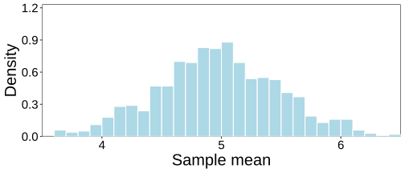
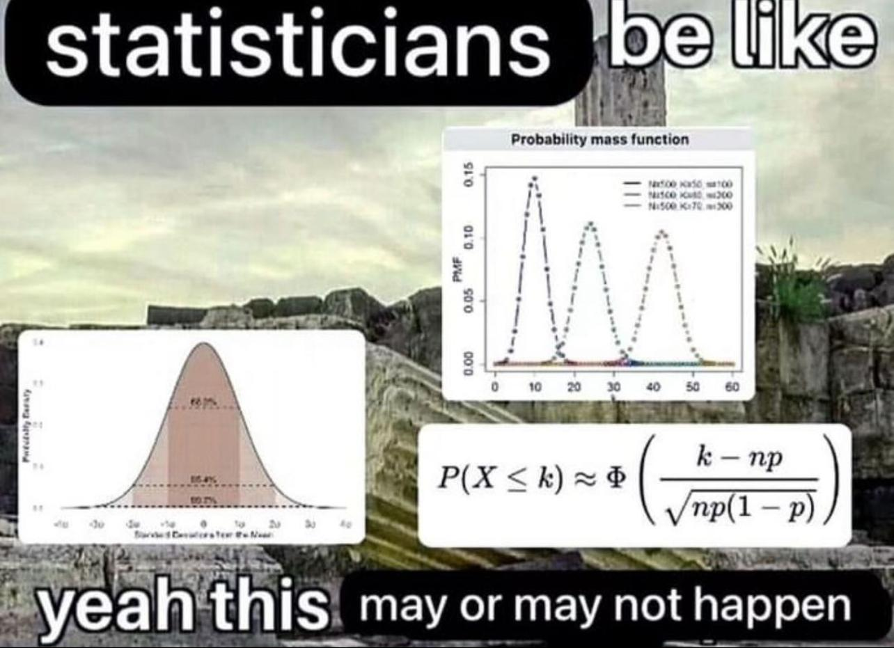
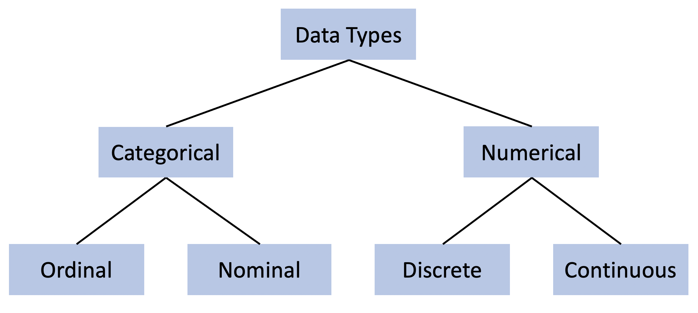
Usually we cannot take the whole population for a study.
For example, it is physically impossible to do a study using blood samples from all the people in the world. Sometimes the population is small, but it is extremely expensive to collect the material.
Therefore, researchers use samples - random and representative groups taken from the general population that can be analysed to provide information about the whole population.
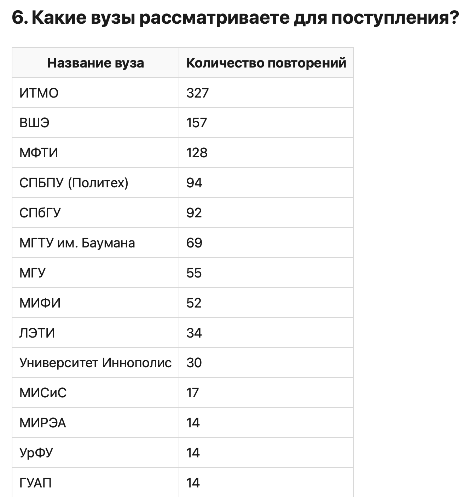
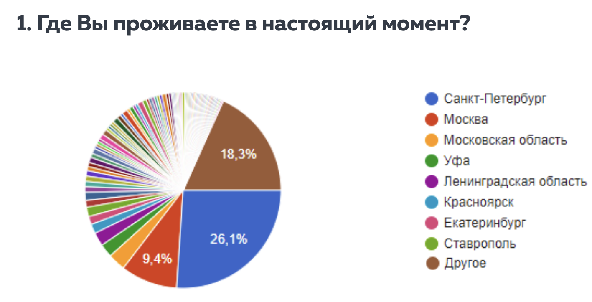
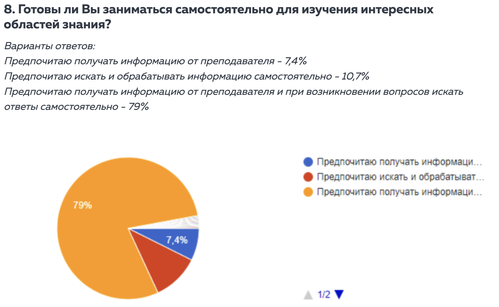
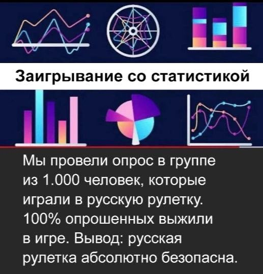
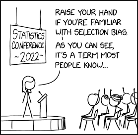
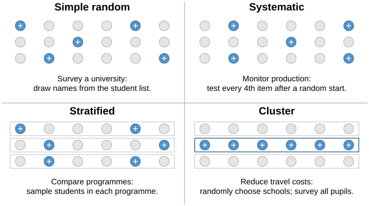
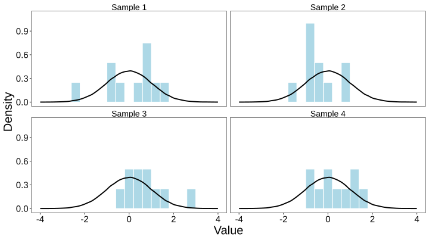
Small random samples vary. Black curve: population density.
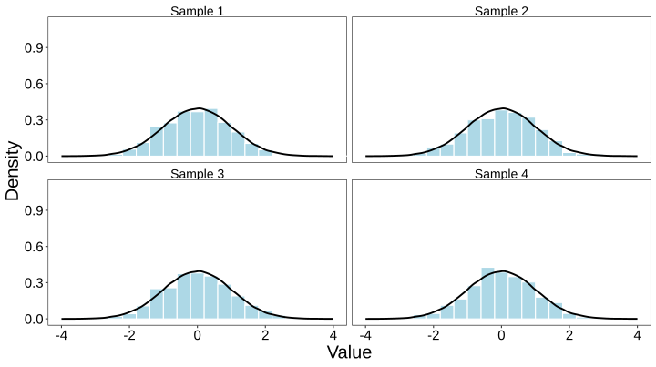
Larger random samples vary less. Size does not fix selection bias.
Finite or countably infinite possible values.
Bernoulli · Binomial · Poisson
Values on a continuum; described by a density.
Normal · Uniform · Chi-squared
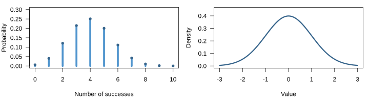
Infinitely many possible values alone do not make a distribution continuous.
Each possible value has a probability. The probabilities sum to 1.
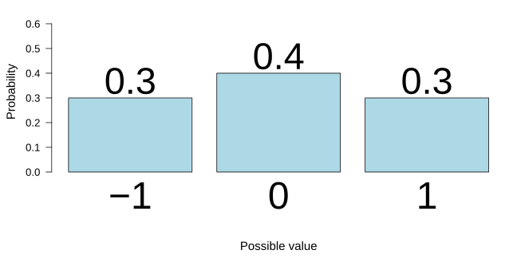
\[\Pr(X=-1) + \Pr(X=0) + \Pr(X=1) = 0.3 + 0.4 + 0.3 = 1\]
Split the same interval into equal-width bins of a uniform distribution.
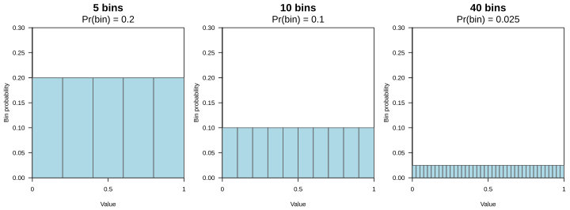
Narrower bins contain less probability. Their total probability remains 1.
\[\text{Density height} = \frac{\text{Bin probability}}{\text{Bin width}}\]
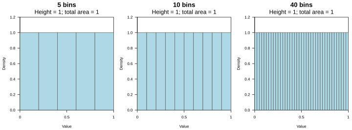
Bar area = probability. In a density histogram, all bar areas sum to 1.
Probability is area under the curve. Total area = 1.
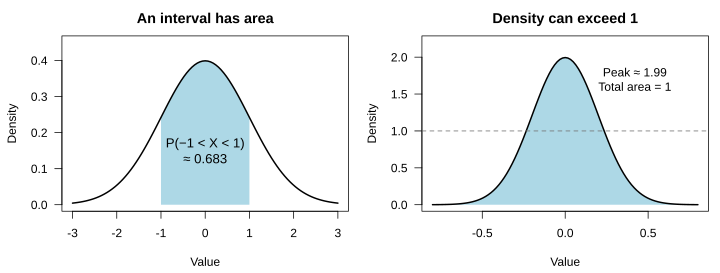
For a continuous variable, \(P(X=x)=0\): a single point has zero width.
Symmetric and bell-shaped.
Continuous
Mean = median = mode = \(\mu\)
\(\sigma\) controls the spread.
\[f(x) = \frac{1}{\sigma\sqrt{2\pi}}\exp\left(-\frac{(x-\mu)^2}{2\sigma^2}\right)\]
A model for real measurements.
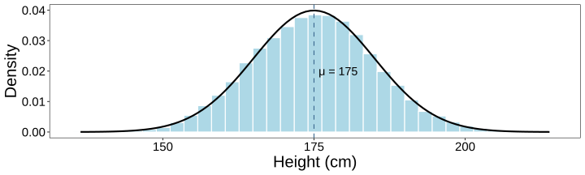
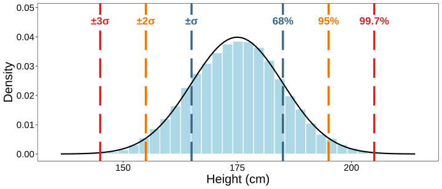
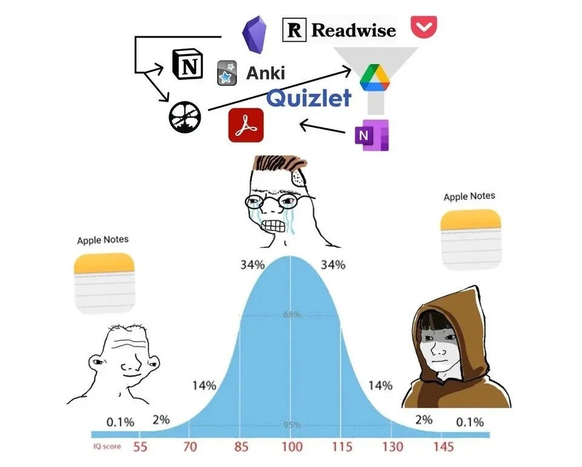
Equal-width intervals
have equal probability.
Continuous, on \([a,b]\).
\[f(x) = \frac{1}{b-a},\quad a \leq x \leq b\]
\(a\): lower bound
\(b\): upper bound
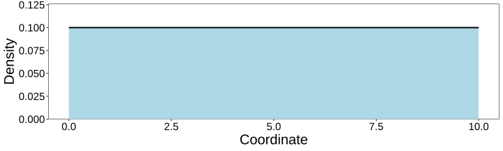
Waiting time until an event.
Assume a constant rate.
Continuous
\[f(x) = \lambda e^{-\lambda x},\quad x \geq 0\]
\(\lambda\): event rate.
Here: \(\lambda = 1\).
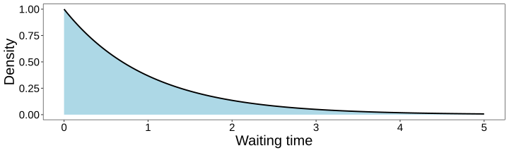
Count successes in \(n\) trials.
Independent trials, fixed \(p\).
Discrete
Example: 10 tosses, \(p = 0.5\).
\[\Pr(X=k) = \binom{n}{k}p^k(1-p)^{n-k}\]
\(n\): trials
\(p\): success probability
\(k\): successes
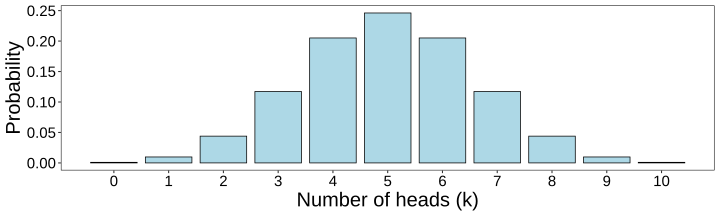
Event count in a fixed interval.
Independent events.
Constant event rate.
Discrete
Example: \(\lambda = 10\) per hour.
\[\Pr(X=k) = \frac{\lambda^k}{k!}e^{-\lambda}\]
\(\lambda\): expected count
\(k\): observed count
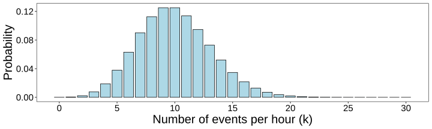
mean(x).median(x).\[\bar{x} = \frac{\sum_{i=1}^{n}x_i}{n}\]
Population mean \(\mu\): a fixed, usually unknown quantity.
Sample mean \(\bar{x}\): an estimate of Population mean that different for every sample.
Mean, median and mode coincide for a normal distribution.
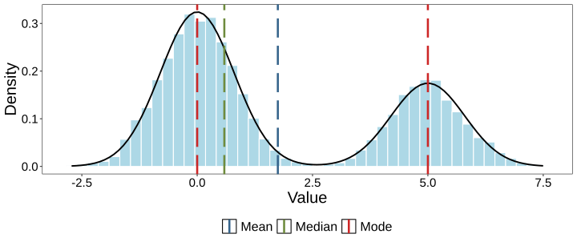
Two peaks. The mean and median describe different features of the data.
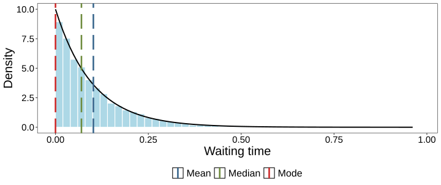
The long right tail pulls the mean above the median.
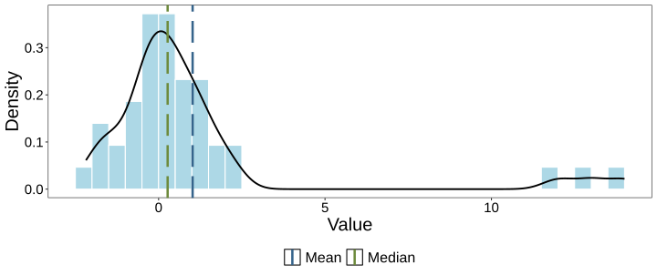
The mean is more sensitive to extreme values than the median.
A point beyond a boxplot whisker is a flag, not proof of an error.
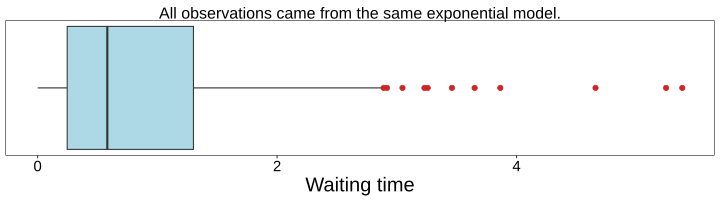
Investigate
Check the raw records, units, measurement process and study context.
Keep
Valid observations, including unusual ones.
Correct or exclude
Confirmed errors, with a documented reason.
If uncertain, compare results with and without the observations.
\[s = \sqrt{\frac{\sum_{i=1}^{n}(x_i-\bar{x})^2}{n-1}}\]
\[SD = \sqrt{\frac{\text{sum of squared deviations from the mean}}{\text{number of observations} - 1}}\]
Variance is SD squared: \(s^2 = (SD)^2\).
Height in cm: mean and SD in cm; variance in cm².
For a whole population: use \(\mu\) and divide by \(N\), rather than \(n-1\).
A \(p\)-quantile marks cumulative probability \(p\). Quartiles divide a continuous distribution into four equal-probability parts.
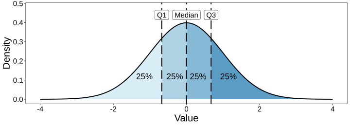
Median = 0.5 quantile. In R: quantile().
The r family generates random values from a distribution.
r<distribution>(n = ..., ...)
n: number of values to generate.Example sample from normal distribution
Also for other distributions: runif(), rexp(), rbinom(), rpois(), rchisq(), rt().
Other function families: d...() density; p...() cumulative probability; q...() quantiles.
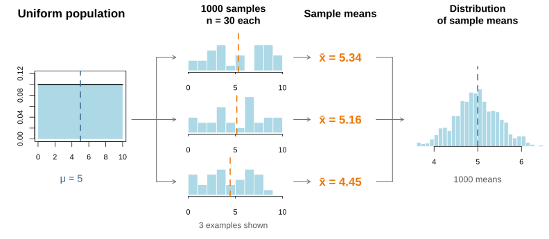
The sample mean varies from sample to sample and have its own distribution!. The standard deviation of this distribution called Standard Error

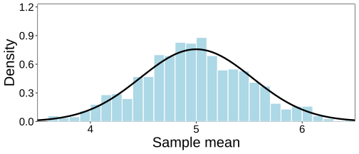
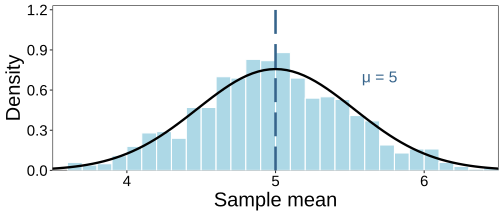
The magic of the Central Limit Theorem! It’s the normal distribution!
The original distribution does not have to be normal!
The centre stays at μ. The spread gets smaller as n grows.
Independent observations from the same distribution, with finite variance.
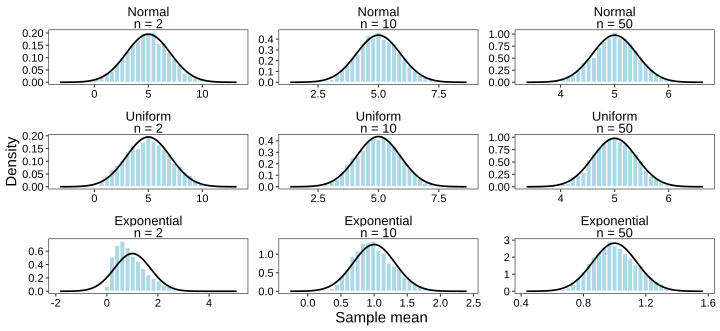
There is no universal sample size that guarantees a good normal approximation.
Each panel: 3000 sample means. Black curve: normal reference with matching mean and SE.
“SD of means of samples”
For independent observations from the same population.
\[SE = \dfrac{SD}{\sqrt n}\]
Estimation by sample
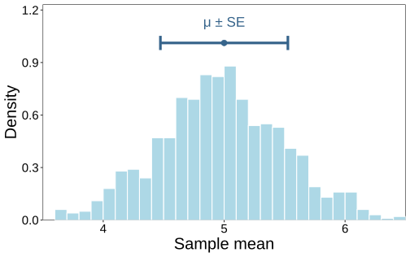
Subtract μ to centre at 0. Divide by SE to obtain SD = 1.
\[Z = \frac{\bar{X}-\mu}{SE}\]
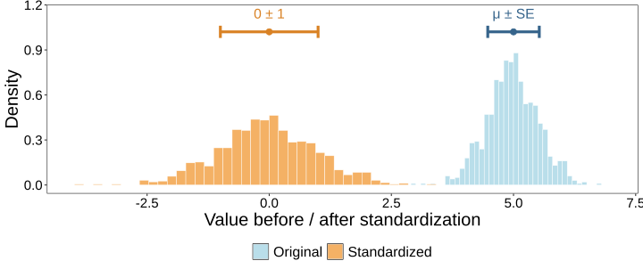
The same standardized sample means, now on the Z scale.
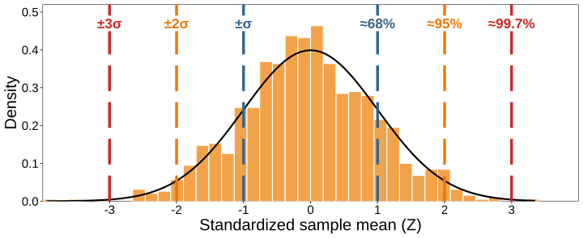
On the Z scale, the mean is 0 and the SD is 1: two SD means ±2. For a normal distribution, this covers about 95%.
Two SD is a useful approximation. For 95%, use 1.96.
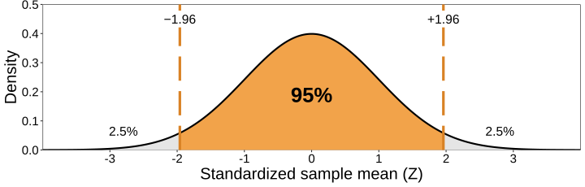
\[\underbrace{\Pr(-2 < Z < 2) \approx 95.45\%}_{\text{two SD: approximate rule}} \quad\longrightarrow\quad \underbrace{\Pr(-1.96 < Z < 1.96) \approx 95\%}_{\text{more precise cutoff}}\]
1.96 is the 97.5% quantile of the standard normal distribution: \(z_{0.975} \approx 1.96\); \(z_{0.025} \approx -1.96\). Each tail contains 2.5%.
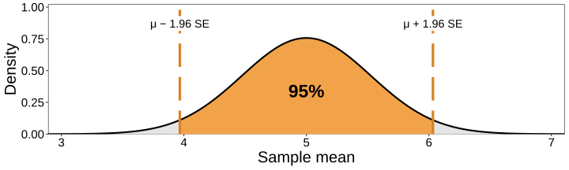
\[-1.96 < \frac{\bar{X}-\mu}{SE} < 1.96\]
\[\bar{X}-1.96SE < \mu < \bar{X}+1.96SE\]
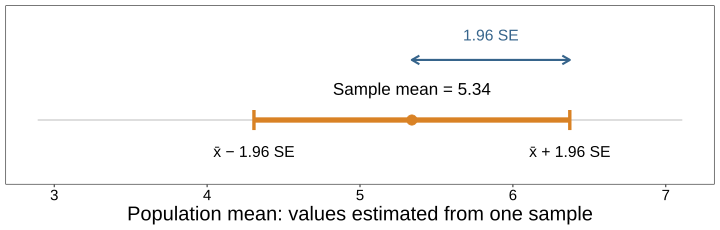
Estimate ± uncertainty
\[\bar{x} \pm \underbrace{z_{0.975}}_{\approx 1.96}\,SE\]
Here σ is known. With unknown σ, we estimate SE and use an appropriate t critical value.
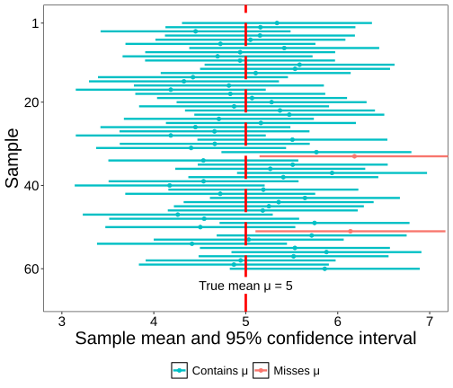
About 95% of intervals constructed this way from the same population will contain the true mean in repeated sampling.
The mean is fixed, the intervals vary
Shown: 60 of the same 1,000 samples
The population SD σ is usually unknown. We replace it with the sample SD s.
\[SE=\frac{\sigma}{\sqrt n}\]
\[Z=\frac{\bar X-\mu}{\sigma/\sqrt n}\]
Standard normal for independent normal observations.
\[\widehat{SE}=\frac{s}{\sqrt n}\]
\[T=\frac{\bar X-\mu}{s/\sqrt n}\sim t_{n-1}\]
Exactly t for independent normal observations, even at small n.
Comparing to standard (!) normal distribution, t-distribution have heavier tails.
It means that t-distribution’s quantiles have bigger values comparing to normal
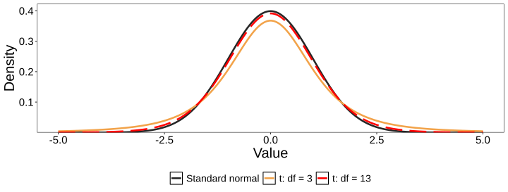
As \(df\) increases, the t-distribution approaches the standard normal distribution.
Degrees of freedom (df) - the only parameter of distribution!
It always have mean = 0 and “spread” defined by df
Degrees of freedom = \(N - 1\)
\(N\) - size of sample
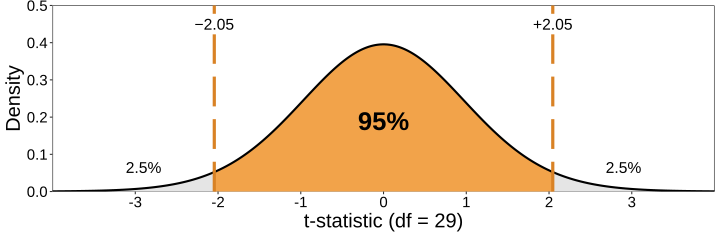
\[\bar x\ \pm\ \underbrace{t_{1-\alpha/2,\,n-1}}_{\text{positive t-quantile}}*\ \underbrace{\frac{s}{\sqrt n}}_{\widehat{SE}}\]
α: significance level; 1 − α: confidence level. For 95%: α = 0.05, so use the 97.5% t-quantile, with df = n − 1.
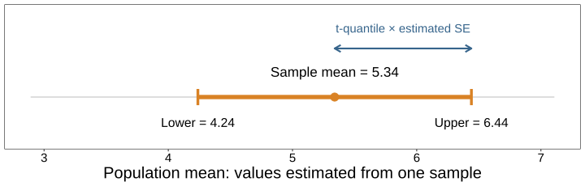
\[\bar x\ \pm\ t_{0.975,\,n-1}\,\frac{s}{\sqrt n}\]
Heavier tails give a larger critical value than 1.96. As df grows, the t critical value approaches the normal one.
Let’s calculate it in R!
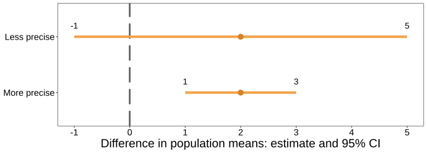
Includes zero: the interval is compatible with no difference
Excludes zero: the interval supports a positive difference
A wide interval including zero is not evidence that the effect is absent.